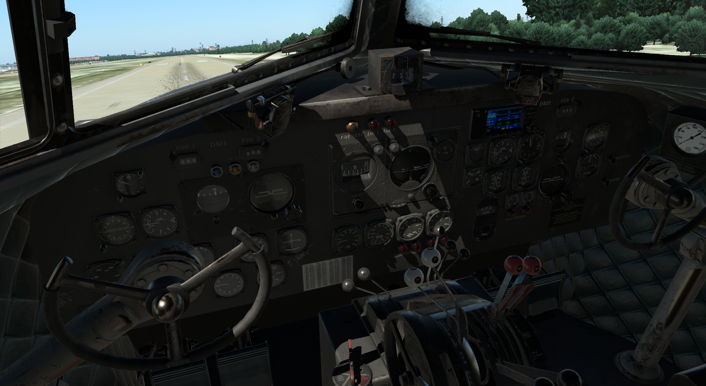

Introduction
NOTE
There are a lot different DC-3 cockpit layouts. We based ours on one of the earliest specimens. The operation, despite the differences, remains the same.

History
Douglas Aircraft Company, after a TWA inquiry, started development of a new series of aircraft, designated as Douglas Commercial (DC), the DC-1 in 1933, and DC-2 next year. Although DC-2 was successful, it was a bit narrow for what American Airlines wanted, which led to the development of one DST prototype. DST stands for Douglas Sleeper Transport! Yes beds in the airplane! Flew first time on December 17, 1935, the 32nd anniversary of Wright Bros first flight. The aircraft was fitted with 21 seats (instead of 14-16 sleeping berths), and designated as DC-3!
Totally built, up to 1943, 607 DC-3 aircraft. But WWII has begun and many DC-3s were put into military service. The needs for a military transport aircraft were huge, and with DC-3 fitting the bill, the C-47 Skytrain was created. It was based on DC-3 with few changes needed for the operations in the military, most notably the reinforced floor that allowed for higher gross weight, and the dual cargo doors. A total of around 10,000 C-47 aircraft (and variations) were constructed. Many C-47s, after WWII, became available for civilian use, and even today, there are many DC-3s and C-47 in use! Later, in 1990, another variation was developed by Basler Turbo Conversions, retrofitting P&W PT-6 turboprop engines, and airframe modifications, designated as BT-67. (source: Wikipedia)
Our Aircraft
Our Leading Edge Simulations DC-3 (v2) is based on the original, 21-seats, variants. The aircraft has a maximum gross weight (MTOW) of 25,200 lbs for take off and landing, and can reach speeds up to 205 mph (178 knots). 2 Pratt and Whitney PW R-1830 Twin Wasp radial engines, providing 1,200 hp each, driving a 3-blade Hamilton Standard propeller.